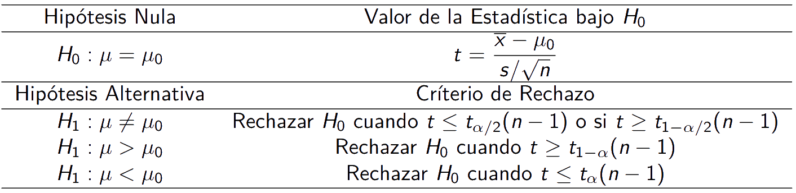
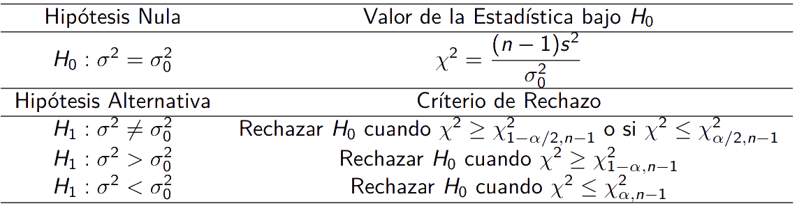
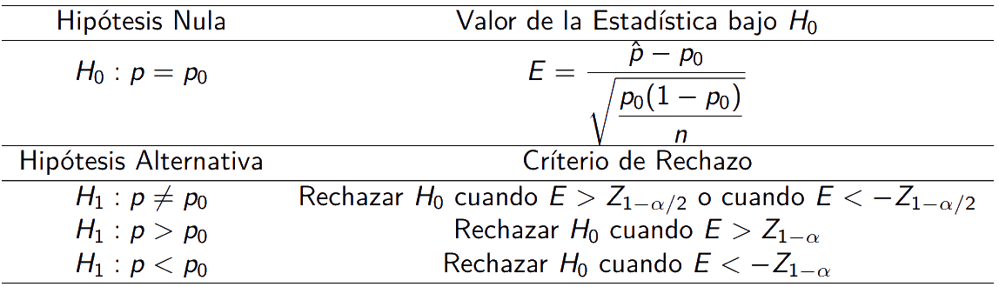

Introducción a inferencia estadística
IND 163 - 2022/02
Eloy Alvarado Narváez
Universidad Técnica Federico Santa María
02/09/22
Métodos de estimación puntual
En inferencia clásica y teoría de decisiones, las observaciones son postuladas tomando valores en forma aleatoria, la ley ó distribución de la(s) variable(s) aleatoria(s) observable(s), \(P\), se asume pertenece a una familia paramétrica conocida en su forma general, pero no se conoce el(los) valor(es) de parámetro(s). Un objetivo fundamental de la inferencia estadística, es determinar valor(es) factibles de parámetro(s) a partir de los datos.
Parámetro y espacio paramétrico
Parámetro: Es una característica numérica de la distribución de la población, que describe, parcial o completamente, la función de masa de probabilidad de la característica de interés, habitualmente se simboliza por la letra griega \(\theta\).
Espacio paramétrico: Es el conjunto de posibles valores que puede(n) ser considerado(s) para el(los) parámetro(s). Se simboliza por la letra griega mayúscula \(\Theta\).
Método de máxima verosimilitud
El método de máxima verosimilitud consiste en encontrar el valor(es) del parámetro(s) que maximiza la función de masa (densidad) de probabilidad conjunta de la muestra, llamada verosimilitud.
- Función de verosimilitud: Sean \(X_1,\cdots,X_n\) una muestra aleatoria con función de masa(densidad) de probabilidad \(f(X;\theta)\) y sea \(L(\theta,;X_1,\cdots,X_n)\) la verosimilitud de la muestra como función de \(\theta\), la cual se representa por:
\[L(\theta;x)=L(\theta,;X_1,\cdots,X_n)=f(x_1;\theta)\times f(x_2;\theta)\times \cdots f(x_n;\theta)\]
El método de máxima verosimilitud busca \(\widehat{\theta}(x_1,\cdots,x_n)\) función que depende sólo de la muestra que maximiza \(L(\theta;x)\). Para obtener estimadores máximo verosímiles se utilizan las herramientas de cálculo matemático, además para simplificar los cálculos se utiliza el logaritmo de la verosimilitud, llamada función de logverosimilitud, representado por:
\[l(\theta;x)=\ln (L(\theta;x))\]
Método de mínimos cuadrados
Supongamos que tenemos \(\mathbb{E}(Y)=\alpha X + \beta\), donde \(\alpha,\beta\) y \(X\) son tal como en una regresión lineal simple. Sea \((x_1,Y_1),\dots,(x_n,Y_n)\) una muestra aleatoria de \(Y\). Los estimadores mínimos cuadrados de los parámetros \(\alpha,\beta\) son los valores de \(\alpha\) y \(\beta\) que minimizan:
\[\sum_{i=1}^{N} [Y_i - (\alpha x_i +\beta)]^2\]
Para poder obtener las estimaciones para \(\alpha\) y \(\beta\), procedemos de la siguiente manera:
Sea \(S(\alpha,\beta)=\sum_{i=1}^{N} [Y_i - (\alpha x_i +\beta)]^2\). Para minimizar \(S(\alpha,\beta)\), debemos resolver las ecuaciones:
\[\dfrac{\partial S}{\partial \alpha}=0 \hspace{20pt}\text{y}\hspace{20pt}\dfrac{\partial S}{\partial \beta}=0\]
Método de mínimos cuadrados: desarrollo
Derivando, obtenemos:
\[\dfrac{\partial S}{\partial \alpha}=\sum_{i=1}^{n}2[Y_i - (\alpha x_i + \beta)](-x_i)=-2\sum_{i=1}^{n}[x_i Y_i - \alpha x_{i}^{2} - \beta x_i]\]
y,
\[\dfrac{\partial S}{\partial \beta}=\sum_{i=1}^{n}2[Y_i - (\alpha x_i + \beta)](-1)=-2\sum_{i=1}^{n}[Y_i - \alpha x_{i} - \beta]\]
Luego, igualando a cero, se tiene que:
\[\alpha\sum_{i=1}^{n} x_{i}^{2} + \beta \sum_{i=1}^{n} x_i = \sum_{i=1}^{n} x_i Y_i \qquad \text{y,} \qquad \alpha \sum_{i=1}^{n} x_i + n\beta=\sum_{i=1}^{n} Y_i\]
Método de mínimos cuadrados: desarrollo
Tenemos dos ecuaciones lineales y dos incógnitas, por lo que podemos obtener soluciones para \(\alpha\) y \(\beta\), así:
\[\hat{\alpha}=\dfrac{\sum_{i=1}^{n} Y_i (x_i - \overline{x})}{\sum_{i=1}^{n} (x_i-\overline{x})^2}\hspace{20pt}\text{donde}\hspace{20pt}\overline{x}=\dfrac{1}{n}\sum_{i=1}^{n}x_i\]
\[\hat{\beta}=\overline{Y}-\hat{\alpha}\overline{x}\hspace{20pt}\text{donde}\hspace{20pt}\overline{Y}=\dfrac{1}{n}\sum_{i=1}^{n}Y_i\]
Estas soluciones siempre se pueden obtener y son únicas si \(\sum_{i=1}^{n}(x_i-\overline{x})^2\neq 0\).
Sin embargo, esta condición se satisface cuando no todos los \(x_i\) son iguales. En cuanto a la estimación de \(\sigma^2\), esta no puede obtenida mediante este método.
Propiedades deseables de los estimadores
Estimadores insesgados
Consideramos una muestra aleatoria, \(X_1,X_2,\cdots,X_n\) y \(T=T(X_1,X_2,\cdots,X_n)\) una función de la muestra, entonces \(T\) es llamada un estadística. Cuando una estadística \(T\), se utiliza con fines de estimación recibe el nombre de estimador. En general, se desea que los estimadores tengan algunas propiedades especiales.
- Estimadores Insesgados: Sea \(T\) un estimador (estadística) de un parámetro \(\theta\), se dice que \(T\) es un estimador insesgado (o libre de sesgo), si \(E[T]=\theta\), para todos los posibles valores de \(\theta\).
En otras palabras, lo que se desea es que el estimador \(T\), en promedio (promediando sobre todas las posibles muestras), sea igual a \(\theta\), “lo que se desea estimar”, bajo la hipótesis que la distribución de probabilidad de la población propuesta es correcta.
Error cuadrático medio
Sea \(T\) un estimador de un parámetro \(\theta\), se define el error cuadrático medio de \(T\), como el valor esperado del cuadrado de la diferencia entre \(T\) y \(\theta\), y se anota \(ECM(T)\), esto es:
\[ECM(T)=E[(T-\theta)^2]\]
Si de desarrolla la expresión, podemos reescribir lo anterior de la forma:
\[ECM(T)=V[T]+(E[T]-\theta)^2\]
El error cuadrático medio de un estimador \(T\), es la suma de dos cantidades no negativas: una es la varianza del estimador, mientras que la otra es el sesgo al cuadrado.
Un criterio para seleccionar un estimador, es que posea el ECM más pequeño entre los posibles estimadores de \(\theta\).
Eficiencia relativa
Sean \(T_1\) y \(T_2\) dos estimadores de \(\theta\). Se define la eficiencia relativa entre \(T_1\) y \(T_2\) como:
\[Ef(T_1;T_2)=\dfrac{ECM(T_1)}{ECM(T_2)}\]
Si la eficiencia relativa es menor que uno, se concluye que el estimador \(T_1\) es más eficiente que el estimador \(T_2\), en caso contrario, se concluye que el estimador \(T_1\) es más eficiente que el estimador \(T_2\).
Consistencia
La consistencia mide la capacidad del estimador de acercarse cada vez más al verdadero valor del parámetro, a medida que el tamaño de muestra crece.
\[ T_n \overset{p}{\to} \theta\]
- Consistencia en media cuadrática:
Un estimador \(T\), de un parámetro desconocido \(\theta\), se dice consistente en media cuadrática, si se cumple:
\[\lim_{n\rightarrow\infty} ECM(T_n)=0\]
Estimación por intervalo
La estimación puntual de un parámetro poblacional adolece del siguiente defecto: La probabilidad de que el estimador coincida con el verdadero valor del parámetro es muy pequeña y en el caso continuo nula. Los intervalos de confianza resuelven este inconveniente, ofreciéndonos un rango para los posibles valores del parámetro poblacional.
Definición intervalo de confianza
Sea \(X_1,X_2,\cdots,X_n\) una muestra aleatoria desde \(f(x;\theta)\), donde \(f(x;\theta)\) es una función de masa (densidad) de probabilidades dependiendo de un parámetro desconocido \(\theta\). Sean \(T_1\) y \(T_2\) dos estadísticos tales que \(T_1(x)<T_2(x)\) para casi todo \(x\) y
\[\mathbb{P}(T_1\leq\theta \leq T_2)=\gamma,\]
donde \(\gamma\) no depende de \(\theta\). Se dice que \([T_1,T_2]\) es un intervalo de confianza para \(\theta\) con \(100\gamma \%\) de confianza.
- \(T_1\) y \(T_2\) reciben el nombre de cota inferior y superior de confianza, respectivamente.
- \(\gamma\) recibe el nombre de coeficiente de confianza.
- \([T_1,T_2]\) es un intervalo aleatorio, ya que sus extremos son variables aleatorias.
Cantidad pivotal
Existen técnicas para construir intervalos (regiones) de confianza, y una de ellas es la del pivote.
Sea \(X_1,X_2,\cdots,X_n\) una muestra aleatoria \(n\) desde \(f(x;\theta)\) y \(Q=Q(X_1,X_2,\cdots,X_n)\). Si la distribución de \(Q\) es independiente de \(\theta\), se dice que Q es una cantidad pivotal.
Ejemplo
Sea \(X_1,X_2,\cdots,X_n\) una muestra aleatoria \(n\) desde una familia normal \(F_{N}(\mu,\sigma^2)\) con media \(\mu\) y varianza conocida \(\sigma^2\), luego:
\[Q=\overline{X}-\mu \rightarrow Q \approx N\left(0,\dfrac{\sigma^2}{n}\right)\]
Intervalo de confianza para la media poblacional
Sea \(X_1,X_2,\cdots,X_n\) una muestra aleatoria \(n\) de una familia normal \(F_{N}(\mu,\sigma^2)\), como \(\overline{X}\) es el mejor estimador de \(\mu\), entonces si se conoce \(\sigma^2\), se tiene que:
\[Z=\dfrac{(\overline{X}-\mu)\sqrt{n}}{\sigma} \approx N(0,1) \Rightarrow Z \text{ pivote}\]
Luego dado \(\gamma\), se requiere determinar los valores más apropiados de \(q_1\) y \(q_2\) que cumplan con:
\[\mathbb{P}\left(q_1 \leq \dfrac{(\overline{X}-\mu)\sqrt{n}}{\sigma} \leq q_2\right)=\gamma\]
Se desea minimizar la longitud del intervalo de confianza, los valores \(q_1\) y \(q_2\) deben ser aquellos que produzcan igualdad de probabilidades en las colas.
Desarrollo intervalo de confianza
Esto es:
\[q_2=Z_{\dfrac{1+\gamma}{2}} \hspace{30pt} q_1=-q_2\]
Luego, si tomamos \(\alpha=1-\gamma\), se tiene:
\[\mathbb{P}\left( Z_{\alpha /2} \leq \dfrac{(\overline{X}-\mu)\sqrt{n}}{\sigma} \leq Z_{1-\alpha/2} \right)=1-\alpha\]
I.C. para la media con varianza población conocida
De la probabilidad del pivote, podemos despejar nuestro parámetro de interés \(\mu\) obteniendo:
\[\mathbb{P}\left( \overline{X}-Z_{1-\alpha/2} \dfrac{\sigma}{\sqrt{n}} \leq \mu \leq \overline{X}-Z_{\alpha/2}\dfrac{\sigma}{\sqrt{n}}\right) =1- \alpha\]
Pero como \(Z_{\alpha/2}=-Z_{1-\alpha/2}\)
\[\mathbb{P}\left( \overline{X}-Z_{1-\alpha/2} \dfrac{\sigma}{\sqrt{n}} \leq \mu \leq \overline{X}+Z_{1-\alpha/2}\dfrac{\sigma}{\sqrt{n}}\right) =1-\alpha\]
Con lo anterior se concluye que el intervalo de \((1-\alpha)\%\) de confianza para la media poblacional está dado por:
\[IC(\mu):=\left[\overline{X}\mp Z_{1-\alpha/2}\dfrac{\sigma}{\sqrt{n}}\right]\]
I.C. para la media con varianza población desconocida
Si se tiene una muestra aleatoria de tamaño \(n\), \(X_1,X_2,\cdots,X_n\) tal que \(X_i \approx N(\mu,\sigma^2)\), con varianza poblacional \(\sigma^2\) desconocida, como sabemos que \(S^2\) es el mejor estimador de \(\sigma^2\), se tiene:
\[T=\dfrac{(\overline{X}-\mu)\sqrt{n}}{s} \approx \mathcal{T}(n-1) \Rightarrow T \text{ pivote}\]
En donde \(\mathcal{T}\) es la distribución t-student con \((n-1)\) grados de libertad. Análogamente, podemos construir el intervalo de confianza para \(\mu\) utilizando esta distribución, obteniéndose:
\[IC(\mu):=\left[\overline{X}\mp t_{1-\alpha/2}(n-1)\dfrac{s}{\sqrt{n}}\right]\]
I.C. para la media con tamaño de muestra grande
Si el tamaño de muestra es muy grande (mayor que 50), utilizando el teorema de límite central, el intervalo de confianza toma la siguiente forma:
\[IC(\mu):=\left[\overline{X}\mp Z_{1-\alpha/2}\dfrac{s}{\sqrt{n}}\right]\]
Notamos que es importante distinguir cuando la varianza poblacional es conocida o desconocida. Si a partir de la muestra aleatoria se determina una varianza, ésta es la muestral, por lo tanto, lo correcto es utilizar un intervalo de confianza considerando la distribución t-student, caso contrario si la muestra es superior a 50, entonces empleamos el teorema de límite central para aproximar por distribución normal.
Intervalos de confianza para una proporción
Sea \(X_1,X_2,\cdots,X_n\) una muestra aleatoria de tamaño \(n\) de una familia binomial \(\mathcal{B} (1,p)\). El estimador de \(p\) sobre la base de la muestra es \(\widehat{P}=\overline{X}\). La distribución de \(\widehat{P}=\overline{X}\), para muestras grandes, se puede aproximar mediante una distribución normal de parámetros \(p\) y \(\dfrac{p(1-p)}{n}\). Con esto podemos aproximar la siguiente cantidad pivotal:
\[Z=\dfrac{(\widehat{P}-p)}{\sqrt{\dfrac{\widehat{P}(1-\widehat{P})}{n}}} \approx N(0,1) \Rightarrow Z \text{ pivote}\]
Luego dado \((1-\alpha)\), los valores de \(q_1\) y \(q_2\) que minimizan la longitud del intervalo serán:
\[\mathbb{P}\left( \widehat{P}-Z_{1-\alpha /2} \sqrt{\dfrac{\widehat{P}(1-\widehat{P})}{n}} \leq p \leq \widehat{P}+Z_{1-\alpha /2} \sqrt{\dfrac{\widehat{P}(1-\widehat{P}) }{n} } \right)=\gamma \]
I.C. final para una proporción
Luego, el intervalo de confianza, del \((100*\gamma)\%\) para la proporción es:
\[IC(p):=\left[ \widehat{P}\mp Z_{1-\alpha/2}\sqrt{\dfrac{\widehat{P}(1-\widehat{P})}{n}}\right] \]
Se puede apreciar que los intervalos de confianza anteriores están compuestos por un estimador puntual, más o menos una cantidad, ésta cantidad recibe el nombre de error de estimación, que resultará útil para determinar el tamaños de muestra.
Intervalos de confianza para la varianza poblacional
Sea \(X_1,X_2,\dots,X_n\) una muestra aleatoria de tamaño \(n\) desde una familia normal \(F_N(\mu,\sigma^2)\). Existen dos posibilidades para la estimación de la varianza, cuando la media población es conocida (caso no práctico) y cuando ésta es desconocida. Para ambos casos podemos definir cantidades pivotales:
- \(\dfrac{n S_{n}^{2}}{\sigma^2} \sim \chi^2(n)\)
- \(\dfrac{(n-1) S_{n-1}^{2}}{\sigma^2} \sim \chi^2(n-1)\)
en donde:
\[S_{n}^{2}=\sum_{i=1}^{n} \dfrac{(X_i - \mu)^2}{n},\qquad S_{n-1}^{2}=\sum_{i=1}^{n} \dfrac{(X_i - \overline{X})^2}{n-1}\]
I.C. final para la varianza poblacional
Siguiendo el mismo procedimiento para la cantidad pivotal, en particular, el caso donde la media poblacional es desconocida. Se tiene:
\[\mathbb{P}\left[ \chi_{\alpha/2}^{2}(n-1) \leq \dfrac{(n-1) S_{n-1}^{2}}{\sigma^2} \leq \chi_{1-\alpha/2}^{2}(n-1) \right]=1-\alpha\]
Luego, despejando el parámetro de interés \(\sigma^2\), podemos definir un intervalo de \((1-\alpha)\%\) de confianza para la varianza poblacional:
\[IC(\sigma^2)=\left[ \dfrac{(n-1)S_{n-1}^{2}}{\chi_{1-\alpha/2}^{2}(n-1)};\dfrac{(n-1)S_{n-1}^{2}}{\chi_{\alpha/2}^{2}(n-1)}\right]\]
Test de hipótesis
Para llegar a tomar decisiones, conviene hacer determinados supuestos o conjeturas acerca de las poblaciones que se estudian. Tales supuestos que pueden ser o no ciertos se llaman hipótesis estadísticas y, en general, lo son sobre las distribuciones de probabilidad de las poblaciones.
En muchos casos se formulan las hipótesis estadísticas con el sólo propósito de rechazarlas o invalidarlas. Cualquier hipótesis que difiera de una hipótesis dada se llama hipótesis alternativa. Denotaremos por \(H_0\) a nuestro supuesto o hipótesis nula, y \(H_1\) a nuestra hipótesis alternativa.
Tipos de error
Al realizar nuestra prueba de hipótesis estamos sujetos al estado real de la naturaleza, es decir, la veracidad de nuestra conjetura (\(H_0\))
| Estado Real | en la naturaleza | ||
|---|---|---|---|
| \(H_0\) es Verdadera | \(H_0\) es Falsa | ||
| Decisión | No se rechaza \(H_0\) | Decisión Correcta | Error Tipo II |
| Se rechaza \(H_0\) | Error Tipo I | Decisión Correcta |
Podemos cometer dos tipos de errores, tipo I y tipo II.
Error tipo I: Se comete al rechazar la hipótesis nula, cuando corresponde aceptarla por ser ésta verdadera. Lo denotamos por \(\alpha\) y es llamado nivel de significación.
Error tipo II: Se comete al no rechazar la hipótesis nula, cuando corresponde rechazarla por ser esta falsa. Lo denotamos por \(\beta\).
El error tipo I es fundamental debido a que es el error que el experimentador controla y pueda manejar.
Prueba para la media poblacional
Sea \(X_1,X_2,\dots,X_n\) una muestra aleatoria de una distribución normal con media \(\mu\) desconocida. En este caso el interés recae en probar uno de los siguientes conjuntos de hipotesis con respecto a \(\mu\).
\[H_0:\mu = \mu_0 \qquad H_0:\mu= \mu_0 \qquad H_0:\mu = \mu_0 \\H_1:\mu \neq \mu_0 \qquad H_1:\mu > \mu_0 \qquad H_1:\mu < \mu_0\]
Supongamos primero que la varianza poblacional \(\sigma^2\) es conocida. Utilizando la estadística de prueba \(\overline{X}\), bajo \(H_0\) se tiene que \(\overline{X}\sim N\left(\mu_0,{\sigma^2 \over n}\right)\). La región crítica de tamaño \(\alpha\) para la hipótesis bilateral es de la forma:
\[\text{Rechazar }H_0 \text{ si}\begin{cases} \overline{X}\geq \overline{x}_{1-\alpha /2}\\ \overline{X}\leq \overline{x}_{\alpha /2} \end{cases}\]
Prueba para la media poblacional: desarrollo
En donde \(\overline{x}_{1-\alpha /2}\) y, \(\overline{x}_{\alpha /2}\) son los valores cuantiles críticos de \(\overline{X}\) de manera tal que:
\[\mathbb{P}(\overline{X}\geq \overline{x}_{1-\alpha /2})= \alpha /2 \hspace{20pt}\text{y}\hspace{20pt} \mathbb{P}(\overline{X}\geq \overline{x}_{\alpha /2})= \alpha /2\]
Dado que bajo \(H_0, \overline{X}\sim N(\mu_0,{\sigma^2 \over n})\), entonces de forma equivalente:
\[\mathbb{P}\left( Z \geq \underbrace{\dfrac{\overline{x}_{1-\alpha /2}-\mu_0}{\sigma / \sqrt{n}}}_{z_{1-\alpha /2}}\right)=\alpha /2\hspace{20pt}\text{y}\hspace{20pt}\mathbb{P}\left( Z \leq \underbrace{\dfrac{\overline{x}_{\alpha /2}-\mu_0}{\sigma / \sqrt{n}}}_{z_{\alpha /2}}\right)=\alpha /2\]
Por lo que, \(H_0\) debe rechazarse cuando un valor de \(\overline{x}\) de la media muestral \(\overline{X}\) es tal que:
\[\overline{x} \geq \dfrac{\sigma z_{1-\alpha /2}}{\sqrt{n}}+\mu_0\hspace{20pt}\text{o}\hspace{20pt}\overline{x} \leq \dfrac{\sigma z_{\alpha /2}}{\sqrt{n}}+\mu_0\]
Prueba para la media poblacional: regiones de rechazo
De manera equivalente, se rechazará \(H_0\) cuando,
\[z\geq z_{1-\alpha /2}\hspace{20pt}\text{o}\hspace{20pt}z\leq z_{\alpha /2}\]
Donde \(z=\dfrac{\overline{x}-\mu_0}{\sigma / \sqrt{n}}\) es el valor de la correspondiente normal estándar al valor \(\overline{x}\) de \(\overline{X}\).
Para la hipótesis alternativa unilateral, \(H_1: \mu > \mu_0\), la región crítica de tamaño \(\alpha\) es el extremo derecho de la distribución de muestreo de \(\overline{X}\), ésta es de la forma:
\[\text{Rechazar } H_0 \text{ si } \overline{X} \geq \overline{x}_{1-\alpha}\]
De forma similar, para la hipótesis alternativa unilateral \(H_1:\mu < \mu_0\), la región crítica es de la forma:
\[\text{Rechazar } H_0 \text{ si } \overline{X} \leq \overline{x}_{1-\alpha}\]
Tabla resumen pruebas para la media con varianza conocida
Lo anterior puede ser resumido en:

Observaciones
Notar que lo anterior, sólo fue posible debido a que sabíamos \(\sigma^2\). En caso de no conocerlo, si utilizamos la misma estadística de prueba \(\overline{X}\), se tiene que:
\[T=\dfrac{\overline{X}-\mu_0}{S / \sqrt{n}} \sim t(n-1)\]
Por lo que siguiendo el mismo procedimiento que antes, podemos llegar a regiones críticas similares.
Tabla resumen pruebas para la media con varianza desconocida
Lo anterior puede ser resumido en:
Pruebas para la varianza poblacional
Sea \(X_1,\dots,X_n\) una muestra aleatoria de una distribución normal con media \(\mu\) desconocida y varianza \(\sigma^2\). Se considera el siguiente test de hipótesis:
\[H_0:\sigma^2=\sigma_{0}^{2}\]
contra una de las siguientes alternativas:
\[H_1:\sigma^2\neq \sigma_{0}^{2},\hspace{5pt}H_1:\sigma^2> \sigma_{0}^{2},\hspace{5pt}H_1:\sigma^2< \sigma_{0}^{2}\]
donde \(\sigma_{0}^{2}\) es el valor propuesto para \(\sigma^2\). La estadística de interés es la varianza muestral \(S^2\). La hipótesis nula será rechazada si la realización de \(s^2\) calculada a partir de la muestra, es suficientemente diferente, mayor que o menos que \(\sigma_{0}^{2}\), dependiendo de la hipótesis alternativa. Bajo \(H_0\):
\[\dfrac{(n-1)s^2}{\sigma_{0}^{2}}\sim \chi^2(n-1)\]
Tabla resumen pruebas para la varianza
Así, conforme la misma construcción realizada anteriormente, es posible encontrar las criterios de rechazo, en resumen:
Pruebas para la proporción poblacional
Sea \(X_1,\dots,X_n\) una muestra aleatoria de una distribución Bernoulli \(Ber(1,p)\). Consideramos el siguiente test de hipótesis:
\[H_0:p=p_0\]
contra una de las siguientes alternativas:
\[H_1:p\neq p_0,\hspace{5pt}H_1:p> p_0,\hspace{5pt}H_1:p<p_0\]
donde \(p_0\) es el valor propuesto para \(p\). La estadística de interés bajo \(H_0\) es:
\[E=\dfrac{\hat{p}-p_0}{\sqrt{\dfrac{p_0(1-p_0)}{n}}}\sim N(0,1)\]
Para \(n>>50\) y \(\hat{p}=\sum_{i=1}^{n}X_i/n\)
Tabla resumen pruebas para la proporción
Así, conforme la misma construcción realizada anteriormente, es posible enconrtar los criterios de rechazo, en resumen:
Regresión lineal simple
Un modelo de regresión es la manera formal de expresar dos ingredientes esenciales de una relación estadística:
La tendencia de la variable respuesta \(Y\) a variar junto a la variable predictora de manera sistemática
Una dispersión de puntos alrededor de la curva de una relación estadística.
Estas dos características están incorporadas en un modelo de regresión al postular que:
Hay una distribución de probabilidad de \(Y\) para cada nivel de \(X\).
Las medias de estas distribuciones de probabilidad varían de manera sistemática con \(X\).
Definición formal
Un modelo de regresión básico donde sólo hay una variable predictora y la función de regresión es lineal se define como:
\[Y_i=\beta_0+\beta_1 X_i + \varepsilon_i\]
donde,
- \(Y_i\) es el valor de la varible respuesta en la i-ésima observación
- \(\beta_0\) y \(\beta_1\) son parámetros
- \(X_i\) es una constante conocida: el valor de la variable predictora en la i-ésima observación.
- \(\varepsilon_i\) es un término de error aleatorio con meadia \(\mathbb{E}(\varepsilon_i)=0\) y varianza \(\mathbb{V}(\varepsilon_i)=\sigma^2\)
- \(\varepsilon_i\) y \(\varepsilon_j\) no están correlacionados, por lo que su covarianza es cero.
Esto modelo se le conoce como modelo de regresión lineal simple.
Características importantes del modelo de regresión lineal simple
La respuesta \(Y_i\) en la i-ésimo ensayo es la suma de dos componentes: - El término constante \(\beta_0+\beta_1 X_i\) y, - El término aleatorio \(\varepsilon_i\). Por lo que \(Y_i\) es una variable aleatoria
Debido a que \(\mathbb{E}(\varepsilon_i)=0\), sigue que:
\[\mathbb{E}(Y_i)=\mathbb{E}(\beta_0+\beta_1 X_i + \varepsilon_i)=\beta_0+\beta_1 X_i + \mathbb{E}(\varepsilon_i)= \beta_0+\beta_1 X_i\]
Así, la respuesta \(Y_i\), cuando el nivel de \(X\) en el i-ésimo ensayo es \(X_i\), viene desde una distribución de probabilidad cuya media está dada por:
\[\mathbb{E}(Y_i)=\beta_0+\beta_1 X_i\]
Sabremos que la función de regresión para este modelo es \(\mathbb{E}(Y)=\beta_0+\beta_1 X\)
Debido a que la función de regresión relaciona la media de la distribución de probabilidad de \(Y\) para un \(X\) dado para el nivel de \(X\).
Características importantes del modelo de regresión lineal simple: continuación
La respuesta \(Y_i\) en el i-ésimo ensayo excede o queda bajo el valor de la función de regresión por la cantidad del término \(\varepsilon_i\). Además, Los errores \(\varepsilon_i\) se asumen que tienen varianza constante \(\sigma^2\), por lo que la variable respuesta \(Y_i\) tiene la misma varianza constante.
Así, el modelo de regresión lineal simple asume que la distribución de probabilidad de \(Y\) tiene la misma varianza \(\sigma^2\), independiente del nivel de la variable predictora \(X\).
Los errores se asumen independientes. Debido a que los términos \(\varepsilon_i\) y \(\varepsilon_j\) no están correlacionados, también no lo estarán las respuestas \(Y_i\) e \(Y_j\).
En resumen, el modelo de regresión lineal simple implica que la respuesta \(Y_i\) viene desde una distribución de probabilidad cuyas medias son \(\mathbb{E}(Y_i)=\beta_0+\beta_1 X_i\) y cuyas varianzas son \(\sigma^2\), para todos los niveles de \(X\). Además, dos respuestas distintas \(Y_i\) e \(Y_j\) no están correlacionadas.
Interpretación de los parámetros de regresión
Los parámetros de regresión \(\beta_0\) y \(\beta_1\) en un modelo de regresión lineal simple son llamados coeficientes de regresión, siendo \(\beta_1\) la pendiente y \(\beta_0\) el intercepto. El primero indica el cambio en la media de la distribución de probabilidad de \(Y\) por el incremento unitario en \(X\).
Cuando el alcance del modelo incluye \(X=0\), \(\beta_0\) entrega la media de la distribución de probabilidad de \(Y\) en \(X=0\). Cuando el alcance del modelo no incluye \(X=0\), \(\beta_0\) no tienen ninguna interpretación particular como termino separado en la regresión.
Teorema de Gauss-Markov
Bajo las condiciones de un modelo de regresión lineal simple, los estimadores de mínimos cuadrados \(b_0\) y \(b_1\) son estimadores insesgados y tienen mínima varianza entre los estimadores insesgados lineales.
Este teorema establece que \(b_0\) y \(b_1\) son estimadores insesgados, por lo que:
\[\mathbb{E}(b_0)=\beta_0 \hspace{40pt} \mathbb{E}(b_1)=\beta_1\]
Por lo que ninguno de estos estimadores tiende a sobrestimar o subestimar sistemáticamente. Segundo, el teorema establece que los estimadores \(b_0\) y \(b_1\) son más precisos (esto es, su distribución muestral es menos variable) que cualquier otro estimador perteneciente a la clase de estimadores insesgados que son funciones lineales de las observaciones \(Y_1,\dots,Y_n\).
Los estimadores \(b_0\) y \(b_1\) son funciones lineal de \(Y_i\).
Propiedades del ajuste de regresión
El ajuste de regresión lineal al usar el método de mínimos cuadrados tiene un número de propiedades que valen la pena mencionar. Estas propiedades de los estimadores de mínimos cuadrados de una función de regresión no aplican para todos los modelos de regresión.
La suma de los residuos es cero: \(\sum_{i=1}^{n} e_i = 0\)
La suma de los valores observados \(Y_i\) es igual a la suma de los valores ajustados \(\widehat{Y}_i\):
\[\sum_{i=1}^{n} Y_i = \sum_{i=1}^{n} \widehat{Y}_i\]
De esto último, se desprende que la media de los valores ajustados \(\widehat{Y}_i\) es la misma que la media de los valores observados \(Y_i\).
Propiedades del ajuste de regresión: continuación
- La suma de los residuos ponderados es cero cuando el i-ésimo residuo es ponderado con el nivel de la variable predictora i-ésima, esto es:
\[\sum_{i=1}^{n} X_i e_i = 0\]
- Una consecuencia de las propiedades 1 y 3, es que la suma de los pesos ponderados es cero cuando el i-ésimo residuo es ponderado con el valor ajustado de la i-ésima variable respuesta, esto es:
\[\sum_{i=1}^{n} \widehat{Y}_i e_i = 0\]
- La recta de regresión siempre pasa por el punto \((\overline{X},\overline{Y})\).
¿Qué veremos la próxima semana?
- Inferencia sobre los parámetros de la regresión lineal simple
- Análisis de varianza para regresión lineal simple
- Medidas de asociación
- Aplicaciones computacionales
¿Que deben preparar para la próxima semana?
- Leer el material adicional sobre R y Python
- Repasar materia MAT042 sobre Intervalos de confianza y test de hipótesis
IND 163 - Semana 3